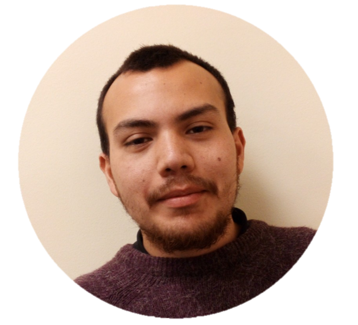

Contact |
CV |
Publications |
Research Projects |
Talks |
Teaching |
Others |
Welcome to my webpage!
I am a postdoctoral researcher at the University of Tarapacá under the supervision of Felipe Lara. Before joining UTA, I completed my PhD in Applied Mathematics at the Università di Genova (UniGe), within the Machine Learning Genoa Center (MaLGa), under the supervision of Silvia Villa and Lorenzo Rosasco.
My current research interests include:
I am a postdoctoral researcher at the University of Tarapacá under the supervision of Felipe Lara. Before joining UTA, I completed my PhD in Applied Mathematics at the Università di Genova (UniGe), within the Machine Learning Genoa Center (MaLGa), under the supervision of Silvia Villa and Lorenzo Rosasco.
My current research interests include:
- Nonconvex optimization
- Splitting algorithms
- Inertial and stochastic methods
- Inverse problems
- Overparameterization

Contact info
Current address:
Departamento de Matemática, Universidad de Tarapacá,
Facultad de Ciencias, 18 de Septiembre 2222,
Arica, Arica y Parinacota, Chile.
- E-mail: cristianvegacereno6(dot)gmail(dot)com
- ResearchGate
- Google Scholar
- ORCID
- GitHub
Brief CV
- 07/2024 – present: Postdoctoral Fellow, University of Tarapacá. Supervisor: Felipe Lara.
- 03/2021 – 06/2024: PhD in Mathematics and Applications, MaLGa Machine Learning Genoa Center, Università di Genova. Supervisors: Silvia Villa and Lorenzo Rosasco. Thesis: Implicit Regularization: Insights from Iterative Regularization and Overparameterization.
- 04/2020 – 11/2020: MSc in Applied Mathematics, Universidad Técnica Federico Santa María. Supervisors: Luis Briceño-Arias and Julio Deride. Thesis: Stochastic primal-dual splitting for composite monotone inclusions. Score: 100/100.
- 03/2014 – 04/2020: Mathematical Engineering, Universidad Técnica Federico Santa María. Thesis: Alternating and randomized projections in convex optimization. Score: 100/100.
Publications
Journal publications
- F. Lara and C. Vega.: "Delayed Feedback in Online Non-Convex Optimization: A Non-Stationary Approach with Applications", Numerical Algorithms, 2025.
- F. Roldán and C. Vega.: "Relaxed and Inertial Nonlinear Forward-Backward with Momentum", Journal of Optimization Theory and Applications, 206 (2), 2025.
- C. Vega, C. Molinari, S. Villa, and L. Rosasco.: "Fast iterative regularization by reusing data", Journal of Inverse and Ill-posed Problems, 32(4), pp. 733--759, 2024.
- L. Briceno-Arias, J. Deride, and C. Vega.: "Random activations in primal-dual splittings for monotone inclusions with a priori information", Journal of Optimization Theory and Applications, 192 (1), pp. 56--81, 2022.
Articles Submitted
- A. Beck, F. Lara, and C. Vega.: "Block descent type methods for quasar-convex minimization", 2025.
- J.J. Maulén, F. Roldán, and C. Vega.: "Relaxed and inertial nonlinear Forward-Backward algorithm", arXiv preprint arXiv:2507.18856, 2025.
- H. Labarriére, C. Molinari, L. Rosasco, C. Vega, and S. Villa.: "Optimization Insights into Deep Diagonal Linear Networks", arXiv preprint arXiv:2412.16765, 2024.
Articles in preparation
- V.S. Amaral, F. Lara, and C. Vega.: "Block Coordinate Descent Methods for Nonconvex Nonsmooth Optimization with Applications", in preparation, 2026.
- F. Lara, and C. Vega.: "QuAdam: A Variant of Adam for Quasar Convex Functions", in preparation, 2026.
Research Projects
- UTA research project: "Fortalecimiento de Grupos de Investigación", Code 8802-25, 2026, Postdoctoral researcher.
- ECOS-Sud-France and ANID-Chile (ECOS240031): "Dynamical systems associated to nonconvex optimization problems", Apr. 2025--Mar. 2028. Member of Chilean team.
- Marie Sklodowska-Curie grant agreement No. 861137, EU Horizon 2020 programme, Mar. 2021--Mar. 2024. PhD student.
- FONDECYT 1190871, Regular 2019, "Fast primal-dual splitting algorithms for solving coupled inclusions". Apr. 2020--Nov. 2020. Master student.
Talks
Conferences and Workshops
- 2nd Latin American Congress on Industrial and Applied Mathematics, Valparaíso, Chile, Jan. 19--23, 2026: "Inertial Nonlinear Forward-Backward algorithms."
- XCIII Annual Meeting of the Mathematical Society of Chile, Vicuña, Chile, Nov. 25--28, 2025: "Inertial Nonlinear Forward-Backward algorithms."
- PGMO Days 2025, Paris, France, Nov. 18--19, 2025: "Inertial Nonlinear Forward-Backward algorithms."
- PGMO Days 2025, Paris, France, Nov. 18--19, 2025: "Delayed Feedback in Online Non-Convex Optimization: A Non-Stationary Approach with Applications."
- XXXVII Mathematics Conference of the Southern Zone, Talca, Chile, Apr. 23--25, 2025: "Delayed Feedback in Online Non-Convex Optimization: A Non-Stationary Approach with Applications."
- 4th International Conference on Variational Analysis and Optimization, Santiago, Chile, Jan. 14--17, 2025: "Delayed Feedback in Online Non-Convex Optimization."
- TraDE-OPT Final Conference, Sestri Levante, Italy, Sep. 25--28, 2024: "Learning from Data via Overparameterization."
- XXXII COMCA, Arica, Chile, Jul. 31, 2024: "Learning from Data via Overparameterization."
- ODS22, Firenze, Italy, Aug. 30--Sep. 2, 2022: "Fast Iterative Regularization by Reusing Data."
- TraDE-OPT Workshop, UCLouvain, Belgium, Jul. 4--8, 2022: "Fast Iterative Regularization by Reusing Data."
- SIAM IS22, Minisymposium on Convex Optimization, 2022: "Fast Iterative Regularization by Reusing Data."
Invited Talks and Seminars
- Seminar, ICTEAM, UCLouvain, Louvain-la-Neuve, Belgium, Nov. 6, 2025: "Delayed Feedback in Online Non-Convex Optimization: A Non-Stationary Approach with Applications."
- CORMSIS Seminar 2025/26 #4, University of Southampton, Southampton, England, Oct. 30, 2025: "Inertial Nonlinear Forward-Backward algorithms."
- PhD and Postdocs seminars, Group SC of IRIT, at ENSEEIHT, INP Toulouse, Toulouse, France, Oct. 23, 2025: "Delayed Feedback in Online Non-Convex Optimization: A Non-Stationary Approach with Applications."
- Seminar, Universidad de Tarapacá, Arica, Chile, Aug. 7, 2024: "Fast Iterative Regularization by Reusing Data."
- Seminar, Universidad Técnica Federico Santa María, Santiago, Chile, Sep. 12, 2023: "Fast Iterative Regularization by Reusing Data."
- Malga Optimization Group, Genova, Italy, Oct. 31, 2021: "Iterative Regularization and the (Stochastic) Chambolle-Pock Algorithm."
Poster session
- TraDE-OPT ITN Summer School 2021, Centrale Supelec, Gif-sur-Yvette, France, 6-9 Jul 2021.
- TraDE-OPT ITN Winter School 2021, TU Braunschweig, Braunschweig, Germany, 15-19 Feb 2021.
Teaching
Part-Time Lecturer, Universidad de Tarapacá
- Statistics (2025–1)
- Introduction to Calculus (2025–1)
- Introduction to Algebra (2025–1)
Part-Time Lecturer, Universidad Técnica Federico Santa María (2020)
- Statistics (2020–2)
- Integral Calculus (2020–2)
- Differential Calculus (2020–1)
Teaching Assistant, Universidad Técnica Federico Santa María
- Optimization, Functional Analysis, Real Analysis, Integral Calculus, and Differential Calculus